Initial Setting Time of cement
Objective
To determine the initial setting time of given cement sample by Vicat apparatus.
Apparatus used:
Vicat apparatus with Vicat plunger, Vicat mould, Glass plate, Measuring jar, Weighing scale, Trowel etc.
Description Initial Setting Time is the time elapsed between the moment the water is added to the cement sample and the time at which the cement paste starts losing plasticity. 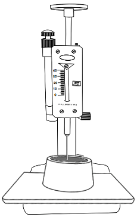
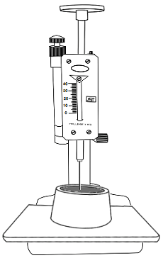
Take cement in a pan and measure 300g of cement using the weighing scale.

 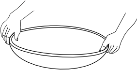
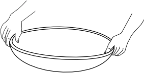


00.00 g
300.00 g
Add 0.85 times the water required for standard consistency to the sample in the container. Start the stop watch at the instant water is added.
Percentage of water = 32 (Obtained from standard consistenecy of cement experiment)
Quantity of cement taken = 300g
✔
✘
Quantity of water to be added = 0.85 x Percentage of water x Quantity of cement taken⁄100
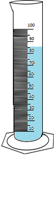
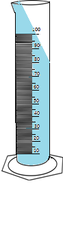

Thoroughly mix the cement and water in a time not less than 3 minutes and not more than 5 minutes.
Fill the cement paste into the Vicat mould and smooth of the surface.
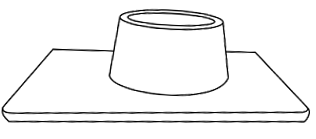 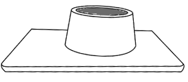
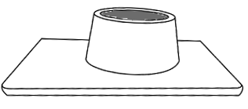
Lower the plunger to touch the surface of the mould and release it quickly to sink into the paste.
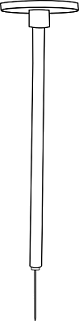 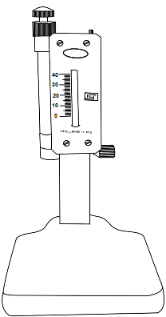
 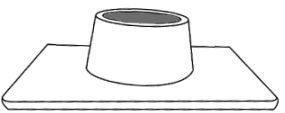
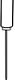
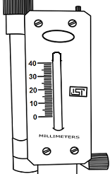
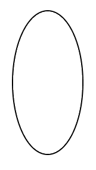
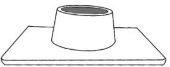
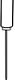
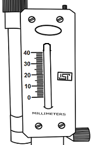
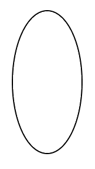
Initial Reading = 40mm
Measure the penetration of the needle for every 5 minutes till the penetration from the top is about 33 to 35mm.
Final Reading = 0mm
Final Reading = 0mm
Final Reading = 0mm
Final Reading = 1mm
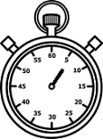 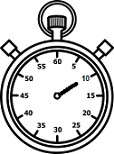 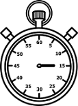 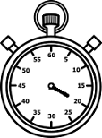 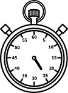 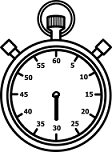 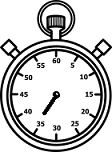 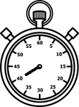 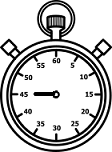Observation and Results:
Time = 5min
Initial Reading = 40mm
Final Reading = 0mm
Time = 10min
Initial Reading = 40mm
Final Reading = 0mm
Time = 15min
Initial Reading = 40mm
Final Reading = 0mm
Time = 20min
Initial Reading = 40mm
Final Reading = 1mm
| Sl.No | Time(min) | Penetration(mm) |
|---|---|---|
| 1 | 5 | 0 |
| 2 | 10 | 0 |
| 3 | 15 | 0 |
| 4 | 20 | 1 |
| 5 | 25 | 2 |
| 6 | 30 | 3 |
| 7 | 35 | 4 |
| 8 | 40 | 4 |
| 9 | 45 | 5 |
Repeat for different positions on the mould until the plunger stops penetrating 5mm from the bottom of the mould.
Inference:
Initial setting time of cement is
30 35 40 45Time =